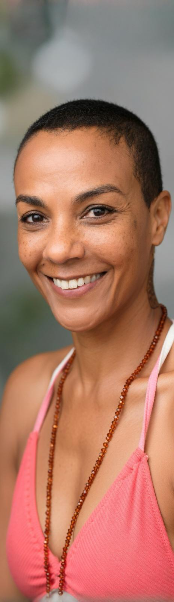

Je mets mon art du massage au service des personnes isolées, âgées ou fragilisées en Martinique. Parce que tout être mérite d'être touché avec bienveillance.
« Le toucher est le premier langage. Avant les mots, avant les regards — les mains parlent. »
L'association O'touch est née d'une conviction profonde : le toucher bienveillant est un soin fondamental, pas un luxe. En Martinique comme partout ailleurs, des milliers de personnes traversent la vie sans jamais ressentir la chaleur d'une main qui prend soin.
Personnes âgées isolées, aidants familiaux épuisés, patients en souffrance chronique — je vais à leur rencontre, dans les EHPAD, les associations, les foyers, pour offrir ce que personne ne devrait se voir refuser : un moment de présence incarnée, de douceur réelle.
O'touch, c'est aussi former. Transmettre le geste juste aux aidants, aux familles, aux soignants. Parce que les mains éduquées sont des mains qui guérissent.
Quatre piliers d'action pour un impact réel et durable auprès des personnes les plus vulnérables.
Je propose des séances de massage gratuites aux personnes âgées en institution, aux malades chroniques et aux personnes en grande précarité sociale.
Bénévolat directJ'anime des ateliers de toucher bienveillant pour les aidants familiaux et professionnels, leur donnant les outils pour soulager leurs proches au quotidien.
TransmissionJ'organise des journées de ressourcement pour des groupes de personnes isolées — un espace de soin, de partage et de reconnexion à soi et aux autres.
CollectifJe porte la parole sur la carence affective et tactile, ses conséquences sur la santé, et la nécessité d'intégrer le toucher dans les parcours de soin.
PlaidoyerPour participer ou me soutenir : 06 96 80 47 47